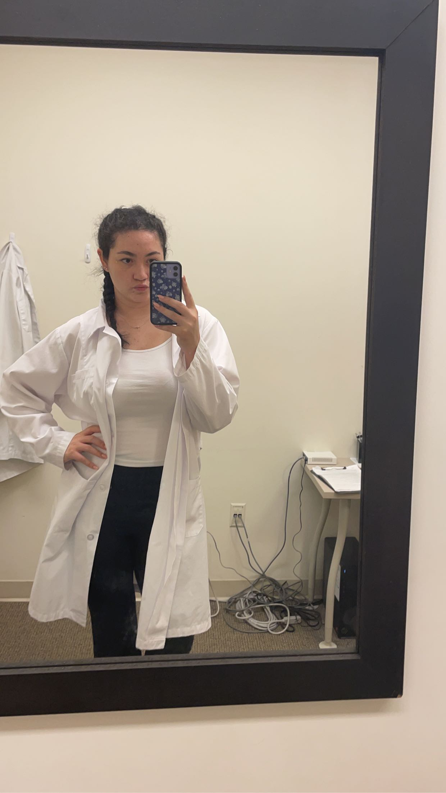
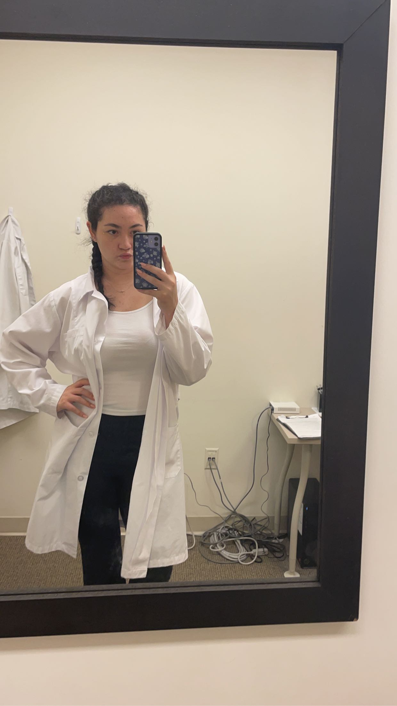
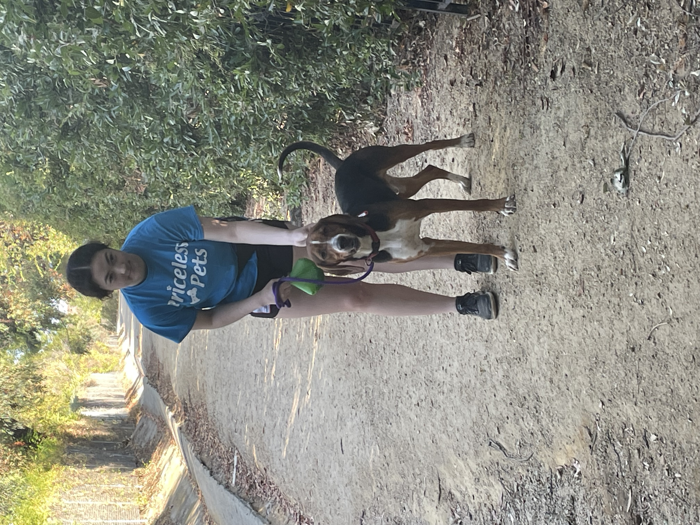
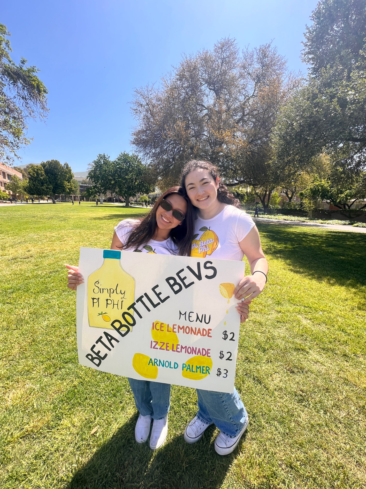
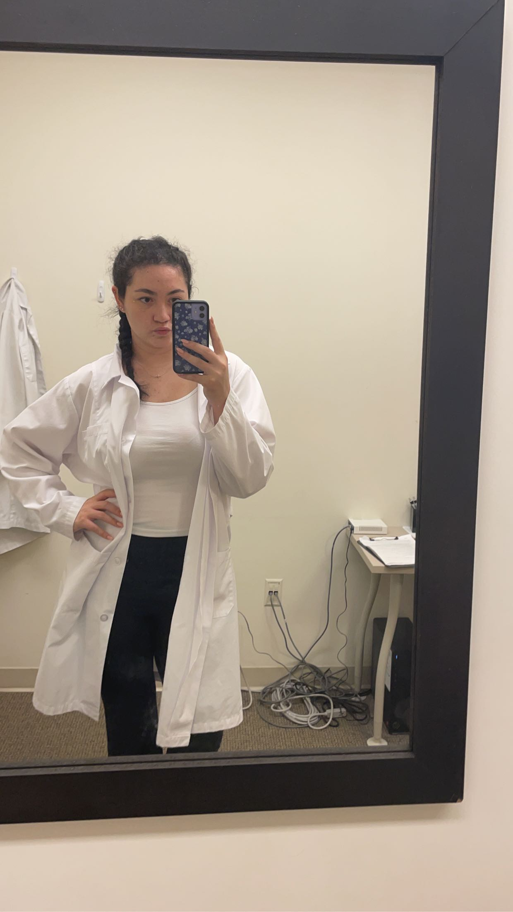
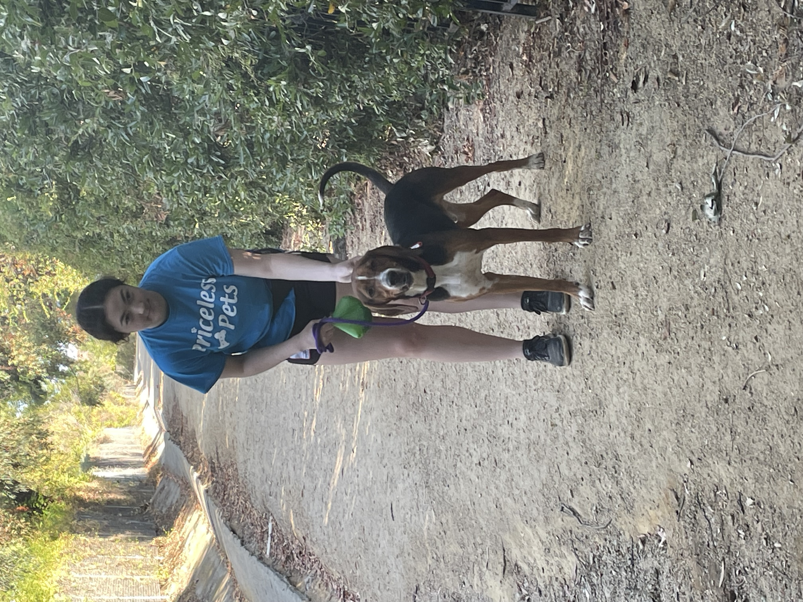
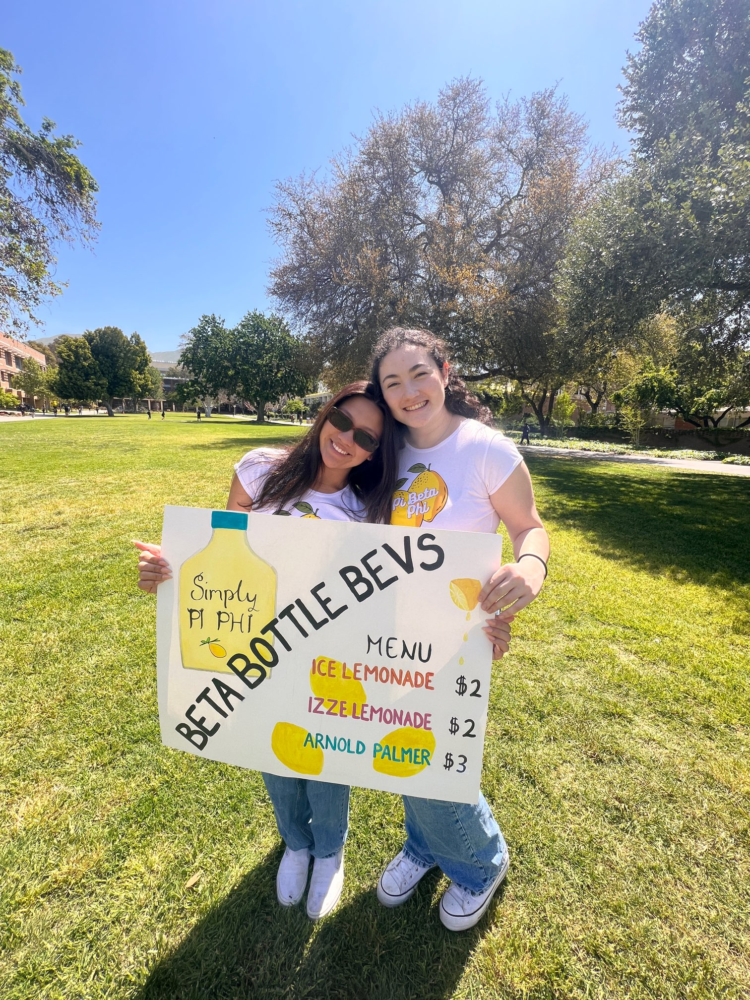

Mia Garcia
Previous to college, I have had lots of experience in regards to working as a team as I have volunteered at my local animal shelter for going on four years now. This gave me great organizational skills and learning how to think on the spot.
I am currently a psychology student at the University of California, Riverside. Due to this my professional expereiene is limited.
On campus I have taken many courses that have been beneficial to my understanding of workplace behavior and skills.
I am currently a research assisstant for the Life Events Lab here on campus, working with Dr. Kate Sweeney. In this lab I work with many participants, enhancing my communication skills as well as my conversational skills.
Additionally, I am a director in my soroity whcih has taught me time management skills and how to work under pressure.
Experience
Research Assistant
• Participated in team meetings to discuss progress
• Interacted with participants to collect data accoridng to protocall
• Conducted surveys and administered questionnaires to collect data from participants
Director of Service and Philanthropy
• Planning multiple large scale philanthropy events
• Communicating with chapter and encourge participation
Volunteer
• collaborated with other volunteers
• learned to think quickly on the spot for solutions
• had empathy and patience for all animals
• have seen over 50 animals get adopted and helped advertise them to potential families
Education
UC Riverside
Portfolio
 



 